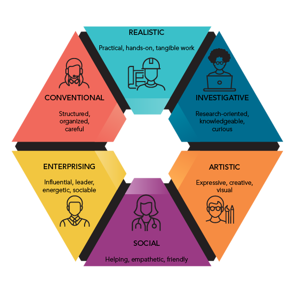
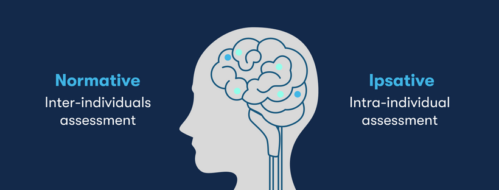
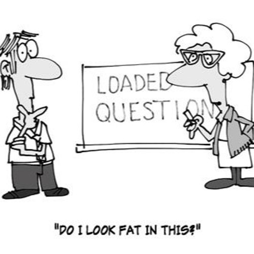

1. The psychological framework
The foundation of THE VOCARBIT relies on the Holland Occupational Themes, commonly known as RIASEC. This specific psychological model was chosen because career counselors around the world trust its accuracy. Using this system provides a highly practical way to link individual personalities directly to academic subjects and future work preferences.
2. The six personality cores
The Holland Code model focuses strictly on tracking individuals' interaction with the world. Each letter of the code demonstrates a distinct personality trait that determines how an individual approaches problems using their own tools and ultimately finds life contentment.
R: Realistic
People belonging to the Realistic group prefer the physical world and things they can actually touch. If a group project requires physical work in general, these are the people who will volunteer to get the job done.
I: Investigative
If the occupation presents a complex mystery, the Investigative group will be the first to dive in. They are fiercely passionate about data analysis, observation, and from that deduce the solutions for the problems.
A: Artistic
Individuals belonging to the Artistic personality trait are guided by freedom and a strong will to express their identity. They utilize literary devices, arts, music, design and any visual tools in general to communicate their true color to the public.
S: Social
People from social group prioritize human connection rather than working with equipment or statistics. They are bound to thrive when placed in environments that involve teaching, counseling, healthcare, or fostering community engagement.
E: Enterprising
The Enterprising group possesses a natural inclination towards social leadership and ambitious goals related to business and startup. They have a sharp eye for project development opportunities and never hesitate to lead a large team.
C: Conventional
Organization, and risk management are the strengths of the Conventional group. They excel at getting things organized, tracking complex data, and maintaining the smooth operation of any system.

3. Our assessment rationale
a. Ipsative measurement
The majority of traditional personality assessment tools function on a normative model where users use checkboxes or numerical scales to rank a long list of unconnected activities. That conventional system frequently triggers "yea-saying" as users have a natural tendency to agree with multiple positive statements at once. The Vocarbit website, instead, establishes an ipsative measurement system to break this impracticality. Forcing individuals to opt out one single option will help to reveal their true internal preference, which in turn will generate a far more accurate personality profile.

b. Bypassing social desirability bias
Another major shortcoming of traditional-based assessment tools is their inherent vulnerability to social desirability bias. To minimize this judgment system based on specific contexts the Vocarbit website developed 15 choices that centralize psychological filter by throwing users into random situations instead of asking them to tick boxes of different statements without truly imagining what they are evaluating how they inherently react in specific obstacles will enable the system to assess based on natural behavioral relevance rather than self-evaluation.
